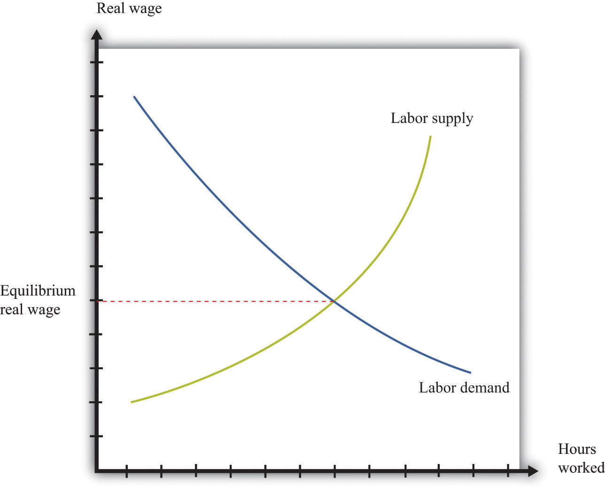
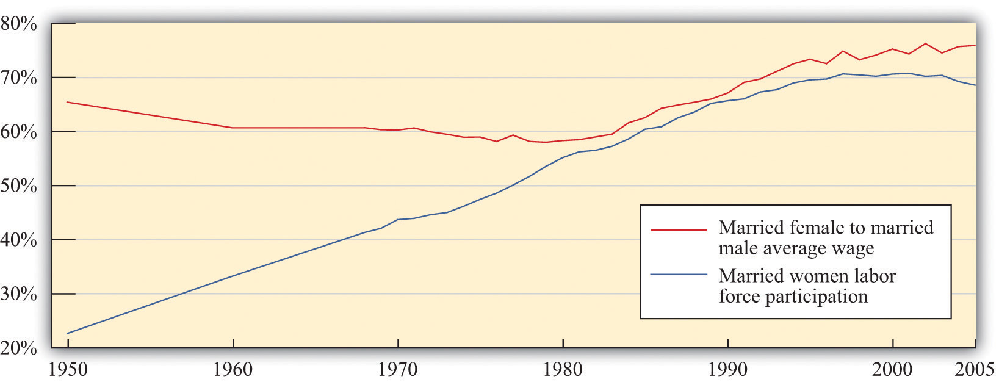
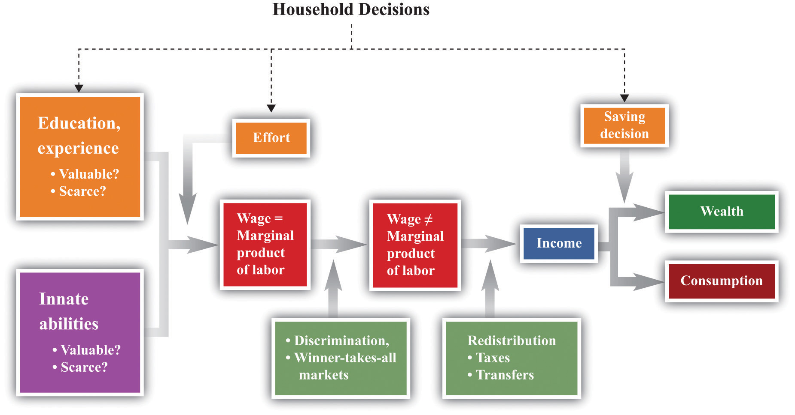
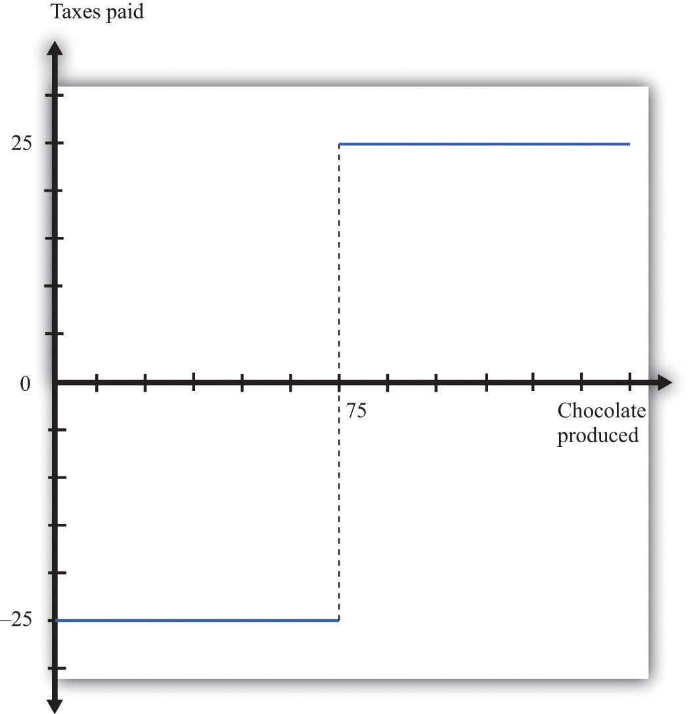

Table 13.1 "Wealthiest Individuals in the United States" shows the top 10 wealthiest people in the United States in 2006 and 2010. These names come from lists compiled each year by Forbes magazine of the 400 wealthiest individuals.Forbes has many such lists available for your study (http://www.forbes.com/lists). You almost certainly recognize some of the names, such as Bill Gates and Michael Dell from your dealings with the computer industry. Other names may be less familiar to you.
Table 13.1 Wealthiest Individuals in the United States
| Rank | 2006 List | 2010 List |
|---|---|---|
| 1 | William H. Gates III | William H. Gates III |
| 2 | Warren E. Buffett | Warren E. Buffett |
| 3 | Sheldon Adelson | Lawrence J. Ellison |
| 4 | Lawrence J. Ellison | Christy Walton |
| 5 | Paul G. Allen | Charles Koch |
| 6 | Jim C. Walton | David Koch |
| 7 | Christy Walton | Jim C. Walton |
| 8 | S. Robson Walton | Alice Walton |
| 9 | Michael Dell | S. Robson Walton |
| 10 | Alice L. Walton | Michael Bloomberg |
Whether or not you know their names, you surely have difficulty conceiving of their wealth. Bill Gates’s net wealth in 2010 was estimated at $54 billion, which is $9 billion more than the wealth of financier Warren Buffett. To give some idea of what this means, if Gates were to receive no further income for the rest of his life but wanted to use up all his wealth before he died, he would need to spend it at a rate of about $5 million a day. The person at the bottom of the Forbes list—that is, the 400th wealthiest person in the United States—had a net worth of a mere $1 billion.
Comparing the two lists, you can see that some of the names and rankings changed between 2006 and 2010. The top two names are the same in both years, but the rest of the list is different. Sheldon Adelson, Paul Allen, and Michael Dell were in the top 10 in 2006 but not in 2010. In 2010, Charles and David Koch joined the top 10. Even among the very rich, there is some instability within the distribution of wealth.
The Forbes list was of the wealthiest Americans. Only the top 3 from the 2010 list are on the list of the world’s wealthiest individuals. In 2010, the wealthiest individual in the world was Carlos Slim Helu, a Mexican businessman who made his fortune from real estate speculation and the telecom industry. Others in the world top 10 come from India, France, Brazil, Spain, and Germany. Forbes also publishes many other lists, including a list of the most powerful celebrities. At the top of that list in 2010 was Oprah Winfrey, who earned $315 million. (Notice that this is her income—the amount she earned in the year—while Table 13.1 "Wealthiest Individuals in the United States" is based on the total wealth accumulated.) Also on the list were Beyonce Knowles, Lady Gaga, Tiger Woods, Johnny Depp, and others from the entertainment industry.
When Forbes published its 2007 list, it also published an article by economist Jeffrey Sachs discussing the other extreme of the wealth distribution: the world’s poorest households. Sachs pointed out that there are about a billion households in the world living on about $1 a day. He calls this group the Forbes One Billion. Sachs calculates that the richest 946 households have the same earnings as the Forbes One Billion. The discussion in Forbes and the calculations by Sachs make it clear that there are immense differences in income and wealth across people in the world. This is true both if we look across countries, comparing the richest to the poorest nations, and if we look within countries.
These differences are persistent, meaning that an individual’s place in the income or wealth distribution is not likely to change significantly from one year to the next. If you are poor this year, you will probably be poor next year. It is not impossible for people to become rich overnight, but it does not happen often. In fact, such differences persist not only from year to year but also from generation to generation. This doesn’t mean that everyone is completely stuck in the same place in the economic hierarchy. There are opportunities for children to become much richer—or much poorer—than their parents. But when we look at the data, we will see that the income level of parents is an important indicator of the likely income of their children.
One goal of this chapter is to document some facts of inequality. This is not a straightforward task. For one thing, it is not even clear what measure of a household’s economic success we should look at. Is it more useful to look at inequalities in income, wealth, consumption, or some other variable altogether? We also get a different picture if we look at these differences at a point in time or across time.
Data on inequality matter for discussions about taxation and redistribution. Governments throughout the world levy a number of different taxes, including taxes on the income people earn and the purchases that they make. Some of the revenues from these taxes are transferred to poorer households in the economy. The taxation of some households and the transfer of the resulting revenue to other households make up the redistribution policies of the government. We are interested in documenting facts about inequality in large part because we need these facts to have a sensible discussion about how much redistribution we—as a society—would like.
In this chapter, we therefore consider the following questions.
What determines the distributions of income, wealth, and consumption?
Is the market outcome “fair” or is there a need for government intervention?
What are the consequences of government redistributions of income and wealth?
A road map for this chapter is shown in Figure 13.1 "Road Map". We begin with some facts about inequality and introduce some techniques to help us describe the amount of inequality both in a country and across countries. Then we consider some explanations of why we observe inequality in society. We observe first that people have different abilities, which translate into differences in income. Then we consider how individual choices—about education, training, and effort—are a further source of difference.
Figure 13.1 Road Map

This figure shows a plan for this chapter. We investigate the different underlying causes of inequality and explain how these translate, through labor markets in the economy, into differences in wages. We then explain how government policies affect the distribution of income in the economy. We also look at what determines the distribution of income, consumption, and wealth.
We then turn to a more abstract discussion of some different philosophical views of inequality. These different views influence current thinking about the distributions of income, wealth, and consumption and help us understand why people have such different opinions about equality and redistribution. We consider how redistribution might affect people’s incentives to work, study, and cheat. Finally, we turn to economic policies that affect inequality.
There is no single, simple measure of the amount of inequality in a society. For example, we could study the distribution of consumption, income, or wealth, but each will tell us something different about the amount of inequality in our economy. These differences matter for the debate about inequality and our evaluation of policy.
Suppose you want to document the distribution of income in an economy. You could begin by asking every household its level of income. In many countries, the government already collects such data. In the United States, for example, this investigation is carried out by the US Census Bureau (http://www.census.gov). If everyone on the list had exactly the same level of income, you would conclude that income was equally distributed. If all but one person on the list had zero income and the remaining person had all the income, then you would conclude that income was very unequally distributed. In reality, of course, you would find that different households have all sorts of different levels of income.
The Lorenz curveA graphical representation of the distribution of income in an economy. provides a useful way of summarizing the distribution. It plots the fraction of the population on the horizontal axis and the percentage of income received by that fraction on the vertical axis. We construct a Lorenz curve as follows.
We know that 0 percent of the population earns 0 percent of the income, so the Lorenz curve starts at the origin. We also know that 100 percent of the population earns 100 percent of the income, so the other end of the Lorenz curve is at that point. If income were exactly equally distributed, then any given fraction of the population would earn that same fraction of income. The lowest 28 percent of the population would earn 28 percent of the income, the lowest 74 percent of the population would earn 74 percent of the income, and so on. In this case, the Lorenz curve would be a 45-degree line connecting the two endpoints. The closer the Lorenz curve to the 45-degree line, the more equal the distribution of income.
Table 13.2 "Example of Income Distribution" illustrates how to calculate the points on a Lorenz curve. The table shows four households, ordered by their income levels. The total income earned is $2,000. The lowest household (25 percent of the population) earns 5 percent of the total income because = 5 percent. If there were complete equality, this number would be 25 percent. So the lowest income household accounts for one quarter of the population but only one twentieth of the income. The first and second households together account for 50 percent of the population (see the last column of the table). They earn $500 in total, which is 25 percent of the total income. The first, second, and third households account for 75 percent of the population and 50 percent of the total income. Finally, if we look at all four households (100 percent of the population), this group earns $2,000, which is, of course, 100 percent of the total income. This Lorenz curve is illustrated in Figure 13.2 "The Lorenz Curve".
Table 13.2 Example of Income Distribution
| Household | Income Level ($) | Percent of Total Income Earned by Household | Percent of Total Income Earned by All Households with This Income or Lower | Percentage of Population with This Income or Lower |
|---|---|---|---|---|
| 1 | 100 | 5 | 5 | 25 |
| 2 | 400 | 20 | 25 | 50 |
| 3 | 500 | 25 | 50 | 75 |
| 4 | 1,000 | 50 | 100 | 100 |
Figure 13.2 The Lorenz Curve

The more equal the distribution, the closer is the Lorenz curve to the 45-degree line.
We explained that the Lorenz curve coincides with the 45-degree line if there is complete equality. There is also a Lorenz curve for the case of complete inequality—in which a single person earns all the income. In this case, the Lorenz curve lies along the horizontal axis until the final household (that is, at 100 percent on the horizontal axis). At that point, the Lorenz curve lies along the vertical line at the right of the figure because the last person has all the income. Real economies exhibit neither complete equality nor complete inequality; a typical Lorenz curve lies below the 45-degree line and above the horizontal axis.
If we want to compare inequality over time or across countries, then we need something even simpler than the Lorenz curve. For this, we use the Gini coefficientThe area between the Lorenz curve and the 45-degree line divided by the area under the 45-degree line., which is equal to the area between the 45-degree line and the Lorenz curve divided by the area below the diagonal. Figure 13.3 "The Lorenz Curve and the Gini Coefficient" shows how the Gini coefficient is related to the Lorenz curve.
Figure 13.3 The Lorenz Curve and the Gini Coefficient

The Gini coefficient is calculated as the area between the Lorenz curve and the 45-degree line divided by the area under the 45-degree line—that is, it equals A/(A + B).
If the Lorenz curve is exactly the same as the 45-degree line, then the Gini coefficient is zero. In this case, there is no area between the Lorenz curve and the 45-degree line. At the other extreme, if the Lorenz curve coincides with the horizontal axis until the final household, then the area above the Lorenz curve and the area below the diagonal are exactly the same. With complete inequality, the Gini coefficient is one. A higher Gini coefficient therefore means more inequality in the distribution of income.
We now use the Gini coefficient and other data to look at some facts about the distributions of income and wealth.
Table 13.3 "Household Income by Quintile" presents data from the US Census Bureau on the distribution of various measures of income from 2003 to 2005. There are three measures of income given for each of the three years:
This table tells us how government redistribution affects the link between wage earnings and income.
Table 13.3 Household Income by Quintile
| Quintiles | Market Income | Postinsurance Income | Disposable Income | ||||||
|---|---|---|---|---|---|---|---|---|---|
| 2003 | 2004 | 2005 | 2003 | 2004 | 2005 | 2003 | 2004 | 2005 | |
| Lowest | 1.5 | 1.5 | 1.5 | 3.3 | 3.3 | 3.2 | 4.6 | 4.7 | 4.4 |
| Second | 7.5 | 7.4 | 7.3 | 8.9 | 8.6 | 8.6 | 10.3 | 10.3 | 9.9 |
| Third | 14.5 | 14.1 | 14.0 | 14.8 | 14.5 | 14.3 | 15.8 | 16.1 | 15.3 |
| Fourth | 24.2 | 23.6 | 23.4 | 23.5 | 23.0 | 22.8 | 23.8 | 24.0 | 23.1 |
| Highest | 52.5 | 53.4 | 53.8 | 49.6 | 50.6 | 51.0 | 45.6 | 44.9 | 47.3 |
| Gini coefficient | 0.492 | 0.496 | 0.493 | 0.446 | 0.449 | 0.447 | 0.405 | 0.400 | 0.400 |
Source: US Census Bureau, Current Population Survey, 2004–2006 Annual Social and Economic Supplements.
These measures of income for each of the three years create the columns of the table. The rows of the table are quintiles (fifths) of the population. As in the construction of the Lorenz curve, the population is ordered according to income. This means the first quintile is the bottom 20 percent of the population in terms of income. The fifth quintile is the top 20 percent of the population in terms of income. To see how these quintiles are created, imagine taking 100 people and arranging them by their income, starting at the lowest level. Then create five groups of 20 people each where the first 20 people in the income distribution are in the first group, the second 20 in the income distribution are in the second group, and so on. Each group of 20 is a quintile of this population.
For each measure of income and for each year, there is an entry in the table showing the fraction of income in that year for a particular quintile. For example, looking at disposable income in 2004, the third (middle) quintile had 16.1 percent of the disposable income, and the highest quintile had 44.9 percent.
There are two striking features of this table. First, there is substantial inequality in the US economy. Looking at market income, the lowest 20 percent of the population receive about only 1.5 percent of the total market income. Contrast this with the highest quintile, which receives more than 50 percent of the total market income. This inequality is reflected in the Gini coefficient of about 0.49. If we look at the very top of the income distribution, the inequality is even more marked: the top 5 percent of the population in 2005 received about 30 percent of income after taxes and transfers, and the top 1 percent received about 16 percent of income.These figures come from Congressional Budget Office, Historical Effective Federal Tax Rates, 1979 to 2005, table 4C, accessed March 14, 2011, http://www.cbo.gov/ftpdocs/88xx/doc8885/Appendix_wtoc.pdf; the definitions of income therefore differ slightly from the US Census Bureau numbers in the table.
Second, the Gini coefficient decreases if we look at postinsurance income relative to market income and at disposable income relative to postinsurance income. This is because transfers represent—on average—a flow from richer to poorer households, and taxes are progressive: they redistribute from the rich to the poor. Government policies bring about some redistribution from richer households to poorer households. That said, there is still substantial inequality even after this redistribution: the lowest quintile receives less than 5 percent of total income, while the highest quintile receives about 45 percent.
Table 13.4 "Gini Coefficient over Time" shows changes in the Gini coefficient over time. (The data are on household incomes and come from the Census Bureau.See http://www.census.gov.) This table shows that inequality in the United States, as measured by the Gini coefficient, has increased steadily over the last few decades. In fact, if you go back to the end of World War II, the end of the 1960s represents a turning point in the income distribution.Thomas Piketty and Emmanuel Saez, “Income Inequality in the United States, 1913–98,” Quarterly Journal of Economics 118 (2003):1, together with their updated data set available at Emmanuel Saez’s faculty home page, http://www.econ.berkeley.edu/~saez/TabFig2008.xls. From 1940 through the 1960s, the income share of the top 10 percent fell from about 45 percent to about 33 percent. But starting in the 1970s, the pattern reversed, so that by 2007, the share of the top 10 percent exceeded 45 percent of total income.
Table 13.4 Gini Coefficient over Time
| Year | Gini Coefficient |
|---|---|
| 2009 | 0.469 |
| 2001 | 0.466 |
| 1997 | 0.459 |
| 1992 | 0.434 |
| 1987 | 0.426 |
| 1982 | 0.412 |
| 1977 | 0.402 |
| 1972 | 0.401 |
| 1967 | 0.399 |
Figure 13.4 "The Distribution of Income from 1913 to 2008" focuses on the top of the income distribution: the top 1 percent. In part (a) of Figure 13.4 "The Distribution of Income from 1913 to 2008", we can see that the real income of the bottom 99 percent of the population increased dramatically between the 1930s and the 1970s, increasing from $9,000 in 1933 to over $40,000 in 1973. (These numbers are adjusted for inflation and are in 2008 dollars.) Income over this period, for this group, grew an average of 3.7 percent per year. Over the next 35 years, the real income of this group hardly grew at all: the average growth rate was 0.2 percent per year. By contrast, the income of the top 1 percent grew only 1.7 percent per year on average between 1913 and 1973 but grew at an average 2.8 percent from 1973 to 2008. As a consequence, the top 1 percent of the income distribution roughly doubled their share of total income over this period.
At the very top of the income distribution, we have the true superstars: rock stars, movie stars, sports stars, top CEOs, and so on. The top 0.01 percent of the population—that is, the richest 30,000 or so people—has seen their share of income increase sevenfold since 1973.
Figure 13.4 The Distribution of Income from 1913 to 2008

(a) The average real income in 2008 dollars for the bottom 99 percent of the population rose substantially between the 1930s and the 1970s but has been much flatter over the past few decades. (b) The top 1 percent has seen substantial income growth in recent decades.
Table 13.5 "Gini Coefficients for Net Worth" looks at wealth data for a cohort of individuals between 1989 and 2001. At the beginning of the study, this group was between 34 and 43 years old.Arthur B. Kennickell, A Rolling Tide: Changes in the Distribution of Wealth in the U.S., 1989–2001 (Washington, DC: Federal Reserve Board, 2003). Wealth is defined as assets minus liabilities. We can see that the Gini coefficients for wealth are considerably larger than the ones we saw earlier for income. There is more equality in income than in wealth.
Table 13.5 Gini Coefficients for Net Worth
| Year | Gini Coefficient |
|---|---|
| 1989 | 0.74 |
| 1992 | 0.75 |
| 1995 | 0.75 |
| 1998 | 0.76 |
| 2001 | 0.78 |
Income is a flow, meaning that individuals receive labor income on a weekly or monthly basis. Wealth is a stock: it is a measure of the assets that an individual or a household has accumulated and is measured at a particular point in time. Wealth comes partly from what people inherit and partly from decisions they make about allocating income between consumption and saving. The table also shows that wealth inequality increased for this group. There are two reasons that this could happen: (1) it may reflect greater inequality as a whole in society and (2) it may be due to inequality increasing as people become older.
The position of a household in the income distribution is not static. A household in the lowest quintile of income one year will not necessarily be there the following year. Households can move up and down in the income distribution. For example, suppose you are fortunate enough to win the lottery or publish a hit song. Your income and thus your position in the income distribution will change quickly. For others without a hit song or luck with the lottery, changes in income can take more time. Perhaps you invest in a college education; after graduation and with a new job, you begin a climb through the income distribution. Bad luck can send you in the opposite direction. If your skills become less valuable, perhaps because of changes in technology, you may find that you have to move from a higher-paying to a lower-paying job, or you may become unemployed. There are many routes from rags to riches and from riches to rags.
One reason for mobility is the changes in income that most people experience in their lifetimes. For most people, the income they earn in their first job after school pays a lot less than the job they retire from. Thus most individuals experience a profile of income over their lifetime that takes them from one part of the income distribution to another. For most people, income also decreases in retirement.
Table 13.6 "Dynamics of Income in the United States" illustrates these dynamics over a five-year period. The top part of the table refers to earnings and the lower part to wealth. The data come from looking at distributions of earnings and wealth in two years: 1989 and 1994.
Table 13.6 Dynamics of Income in the United States
| Measure | 1989 Quintile | 1994 Quintile | ||||
|---|---|---|---|---|---|---|
| Highest | Fourth | Third | Second | Lowest | ||
| Earnings | Highest | 90 | 7 | 2 | 1 | 0 |
| Fourth | 27 | 34 | 30 | 6 | 2 | |
| Third | 9 | 14 | 45 | 25 | 6 | |
| Second | 5 | 6 | 15 | 51 | 23 | |
| Lowest | 5 | 5 | 6 | 17 | 68 | |
| Wealth | Highest | 63 | 26 | 7 | 3 | 2 |
| Fourth | 27 | 45 | 17 | 8 | 3 | |
| Third | 7 | 22 | 45 | 20 | 6 | |
| Second | 3 | 5 | 26 | 45 | 21 | |
| Lowest | 1 | 3 | 5 | 25 | 67 | |
Source: Santiago Rodríguez, Javier Díaz-Giménez, Vincenzo Quadrini, and José-Víctor Ríos-Rull, “Updated Facts on the U.S. Distributions of Earnings, Income and Wealth,” Federal Reserve Bank of Minneapolis Quarterly Review, Summer 2002.
Under “Earnings,” there are five rows indicating the quintiles of the distribution in 1989. Along the top, there are five columns indicating the quintiles of the distribution in 1994. The entries refer to the percentage of people who go from one quintile in 1989 to another quintile in 1994. For example, 27 percent of the households in the second highest quintile in 1989 were in the top quintile in 1994, while 34 percent of the households in the second highest quintile in 1989 stayed there. A similar interpretation is given for the wealth part of the table.
The two parts of this table give a sense of income and wealth mobility through the distribution. If there were no mobility over time, so that households stayed in the same income and/or wealth quintiles), then the table would have 100 on the diagonal and 0 everywhere else. Mobility is indicated by the fact that the numbers along the diagonal are less than 100. From the part of the table referring to earnings, 90 percent of the people in the top income group in 1989 were there in 1994 as well. This means that very high income is extremely persistent. In contrast, only about two-thirds of the people in the lowest income class in 1989 remained in that group in 1994, while 17 percent moved up one quintile. As time passes, those who moved up will then move on to other parts of the income distribution.
Table 13.6 "Dynamics of Income in the United States" shows income and wealth dynamics over a relatively short period of time. It is also useful to look at dynamics across generations, though data are more difficult to obtain. One approach that researchers use over longer periods of time is to follow families. If your family was in the middle income group, we can see the likelihood that you will be in that same income group or in another income group. These dynamics take a longer amount of time because they are affected by things like parents’ choices about the education of their children.
One way to study intergenerational income mobility is to take a group of individuals at a point in time and see how much of their current income can be “explained” by the income of their parents. (Explained is in quotation marks because it is difficult to disentangle the effects of family income from other influences. There are many factors associated with parents’ income, such as the quality of schools and schoolmates, which are correlated with family income.)
One study reports an elasticityThe responsiveness of one variable to changes in another variable. of 0.5 on the relationship between family and child income. This means that if parents’ income is 1 percent higher, the child’s income will be higher by about 0.5 percent. So if two families have an income difference of $100,000, then the prediction is that their children will have a difference of $50,000.The estimate is reported in Thom Hertz, Understanding Mobility in America (American University, Center for American Progress, April 26, 2006). This number is higher for the United States than for almost all the other (mostly European) countries studied. This same elasticity in Denmark is only 0.15, for example.
Toolkit: Section 31.2 "Elasticity"
You can review the concept of elasticity in the toolkit.
The same study also looked at the mobility of families across the quintiles of income. A child whose family was in the middle quintile income had about a 40 percent chance of moving down the income distribution to a lower quintile and a 36.5 percent change of moving up. But 47 percent of the children born to a family in the lowest quintile remained there.
Table 13.7 "Gini Coefficients in Different Countries" presents some evidence on the distribution of income in different countries. There are some significant differences across countries in income inequality. Eastern European countries, such as Hungary and Albania, and Western European countries, such as Sweden and France, have relatively equal distributions of income. At the other extreme, countries like Namibia and Brazil are highly unequal. The United States is about in the middle of these distributions.
Table 13.7 Gini Coefficients in Different Countries
| Country | Gini Coefficient in 2005 |
|---|---|
| Namibia | 0.71 |
| Brazil | 0.59 |
| South Africa | 0.58 |
| Mexico | 0.55 |
| Zambia | 0.53 |
| Argentina | 0.52 |
| Malaysia | 0.49 |
| Philippines | 0.46 |
| China | 0.45 |
| Thailand | 0.43 |
| United States | 0.41 |
| United Kingdom | 0.36 |
| France | 0.33 |
| Russian Federation | 0.31 |
| Ethiopia | 0.30 |
| Albania | 0.28 |
| Hungary | 0.27 |
| Sweden | 0.25 |
Source: “Inequality in Income—Selected Countries and Regions,” United Nations 2005 Human Development Report, figure 3, accessed January 30, 2011, http://hdr.undp.org/en/reports/global/hdr2005.
When we compare countries, remember that some countries have much higher income than others. Looking at Table 13.7 "Gini Coefficients in Different Countries", low-income countries generally seem to have more inequality than high-income countries. This is suggestive of a link between inequality and stages of development. Economist Simon Kuznets suggested that inequality would increase in the early stages of the development process but decrease in later stages. This became known as the Kuznets hypothesis. One story was that as a country grows, the labor force is split between a relatively high-income industrial sector and a relatively low-income agricultural sector. As a country grows, more labor is allocated to the more productive manufacturing sector, and thus inequality is reduced over time.
Whatever the mechanism, world inequality appears to be decreasing significantly. A recent study found that the Gini coefficient for the world had declined from about 0.58 in the 1970s to about 0.51 in the late 2000s.See Maxim Pinkovskiy and Xavier Sala-i-Martín, “Parametric Estimations of the World Distribution of Income” (National Bureau of Economic Research Working Paper 15433, October 2009), accessed March 14, 2011, http://www.nber.org/papers/w15433.pdf.
There are also some fascinating differences in the dynamics of inequality. The decline in inequality in the middle of the 20th century was common throughout much of the developed world. The more recent increase in equality that we have documented in the United States is also visible in some other countries, such as Australia, New Zealand, and the United Kingdom. By contrast, most of Western Europe has not seen the same kinds of increases in inequality.
We have provided some facts about differences in income across households. We now turn to a discussion of where those differences come from.
We begin by looking at earnings, by which we mean the income that households obtain from their work in the labor marketWhere suppliers and demanders of labor meet and trade.. Figure 13.5 "Labor Market Equilibrium" shows the labor market. The real wageThe nominal wage (the wage in dollars) divided by the price level. is on the vertical axis, and the number of hours worked is on the horizontal axis. The labor demand curve indicates the quantity of labor demanded by firms at a given real wage. As the real wage increases, firms demand less labor. The labor supply curve shows the total amount of labor households want to supply at a given real wage. As the real wage increases, the quantity of labor supplied also increases.See Chapter 4 "Everyday Decisions", Chapter 8 "Why Do Prices Change?", and Chapter 9 "Growing Jobs" for more discussion. Here we are interested in what the labor market can tell us about how much people earn.
Toolkit: Section 31.3 "The Labor Market"
You can find more details about the labor market in the toolkit.
Figure 13.5 Labor Market Equilibrium
When firms are deciding how many hours of work to hire, they use this decision rule: hire until
real wage = marginal product of labor.The left side of this equation represents the cost of purchasing one more hour of work. The right side of this equation is the benefit to the firm of one more hour of work: the marginal product of labor is the extra output produced by the extra hour of work. If the marginal product is higher than the real wage, a firm can increase its profits by hiring more hours of work.
We use this equation as a starting point for thinking about distribution and inequality. Different individuals in the economy are paid different real wages. This reflects, among other things, the fact that there is not a single labor market in the economy. Rather, there are lots of different markets for different kinds of jobs: accountants, barbers, computer programmers, disc jockeys, and so on. We can imagine a diagram like Figure 13.5 "Labor Market Equilibrium" for each market. In all cases, the firms doing the hiring will want to follow the rule given by the equation. And if firms follow this hiring rule, then two individuals who earn different real wages must differ in terms of their marginal product. The worker who earns the higher wage is also the worker who is more productive.
But why would workers have different marginal products? One reason is that people differ in terms of their innate abilities. For any individual, we could come up with a long list of the skills and abilities that he or she is born with—natural talents. Some are good at mathematics, some are particularly strong, some are good at music, some are good at building things, some are very athletic, some are good at managing other people, and so on. Abilities that tend to make someone have a high marginal product allow that person to earn higher real wages. Differences in innate abilities, then, are the first explanation we can suggest for why there are differences in earnings when we look across individuals.
The possession of innate ability is not enough to guarantee someone a high marginal product; the market must value the individual’s talents as well. The demand for particular abilities or skills is high if they can be used to produce something that people want to buy. Think about a talented quarterback: his talents translate into an ability to draw paying customers to games, which in turn translates into a willingness to pay a lot for his labor. Or think about a skilled manager: her ability to make good business decisions translates into higher profits for a firm, which in turn translates into a willingness to pay for her labor. If an ability is valued in the market, then there will be high demand for the labor of people with that ability.
What is valuable changes over time and from place to place. Being a skilled quarterback is valued in the modern-day United States. The same innate talent was worth much less 50 years ago in the United States and is still worth little today in a village in the Amazon. Rock stars who can earn hundreds of millions of dollars today would have had very little earning power in 19th-century Australia. The same holds for more mundane skills. The innate abilities that make for a good software designer are more valuable than in the past; the innate abilities that make for a good clockmaker are less valuable than in the past.
Labor supply matters because the value of your innate abilities also depends on how many other people have similar talents. Another reason that highly talented quarterbacks command such high earnings is because their abilities are in short supply. Being a good taxi driver also requires certain skills, but these are much more common. As a result, the supply of taxi drivers is larger, so the real wage earned by taxi drivers is smaller.
Star quarterbacks have innate abilities that most of us don’t possess. But they also have more training and experience in this role. Just about every one of us could be a better quarterback than we are now, if we were willing to train several hours a day. Indeed, most occupations require some skills and training. Computer programmers must learn programming languages, engineers must learn differential equations, tennis players must learn how to play drop shots, and truck drivers must learn how to reverse an 18-wheeler.
As well as such specific skills, an individual’s general level of education is usually an indicator of his or her marginal productivity and hence the wage that can be earned. Basic literacy and numeracy are helpful—if perhaps not absolutely necessary—for nearly any job. A high school education typically makes an individual more productive; a college education even more so. So the distribution of labor income is affected by the distribution of education levels. People also learn on the job. Sometimes this is through formal training programs; sometimes it just comes from accumulating experience. Generally, older and more experienced workers earn higher wages.
Education and experience affect both labor demand and labor supply. More highly skilled workers are typically more valuable to firms, so the demand curve for such workers lies further to the right. At the same time, experienced and trained workers tend to be in more limited supply, so the supply curve lies further to the left. Both effects lead to a higher real wage. Just as a worker’s real wage depends on how valuable and scarce are her abilities, so also does it depend on how valuable and scarce are her education and training.
The influence of experience on earnings is a reminder of an observation that we made when discussing the data. Even in a world where everyone is identical in terms of abilities and education, we would expect to see some inequality in earnings and income simply because people are at different stages of life. Younger, inexperienced workers often earn less than older, experienced workers.
In recent years, economists have looked closely at the differences in wages among skilled and unskilled workers. Loosely speaking, skilled workers are more educated and in occupations that rely more on thinking than on doing. So for example, an accountant is termed a skilled worker, and a construction worker with only a high-school diploma is an unskilled worker. Data on wages suggest that the return to skill, as measured by the difference in wages between skilled and unskilled workers, has widened dramatically since the mid-1970s. Many economists think that this is an important part of the explanation for the increasing inequality in the United States.
One way to measure the increased return to skills is to look at the financial benefit of education, given that more educated workers are typically skilled rather than unskilled. Table 13.8 "Relationship between Education and Inequality in the United States" summarizes some evidence on the distributions of earnings, income, and wealth from 1998. The table indicates that there is a sizable earnings gap associated with education. According to this sample, completing high school increased earnings by nearly $20,000, and a college degree led to an additional $34,000 in average annual income. Education is an important factor contributing to inequality. One way to decrease inequality is to improve access to education.
Table 13.8 Relationship between Education and Inequality in the United States
| Education | Earnings | Income (1998 $) | Wealth |
|---|---|---|---|
| No high school | 14,705 | 21,824 | 78,548 |
| High school | 34,211 | 43,248 | 189,983 |
| College | 68,530 | 88,874 | 541,128 |
Source: Santiago Rodríguez, Javier Díaz-Giménez, Vincenzo Quadrini, and José-Víctor Ríos-Rull, “Updated Facts on the U.S. Distributions of Earnings, Income and Wealth,” Federal Reserve Bank of Minneapolis Quarterly Review, Summer 2002. Here earnings come from both labor and business activities. Income includes transfers.
So far we have said nothing about how hard people choose to work, in terms of either the number of hours they put in on the job or their level of effort while working. Those who are willing to work longer hours and put in more effort will typically obtain greater earnings.
Effort is a matter of individual choice. Some other factors that can influence your earnings are likewise under your own control. Training and education are largely a matter of choice: you can choose to go to college or take a job directly out of high school. By contrast, the abilities you are born with are, from your point of view, a matter of luck. We have more to say about this distinction later when we evaluate the fairness of the distribution of income.
Study after study indicates that the gender of a worker also influences real wages. Figure 13.6 "Labor Market Outcomes for Women" shows the wage gap and the participation rates for married women in the United States.We are grateful to Michelle Rendell for this figure. The discussion in this section is drawn in part from her PhD dissertation research. The participation rate for married women—the fraction of married women in the labor force—has increased from slightly above 20 percent in 1950 to about 70 percent in 2000. Meanwhile, the ratio of wages paid to married women relative to married men displays an interesting pattern over this period. From 1950 to 1980, the ratio fell from 65 percent to 60 percent—that is, the wages of married women fell relative to married men. Thereafter, the ratio rose substantially, to about 80 percent in 2000. At the end of the 20th century, in other words, married women were earning about four-fifths of the wages of married men.
Figure 13.6 Labor Market Outcomes for Women
Economists and other social scientists are interested in understanding these facts. What was the source of the increased participation in the labor force by women and what factors increased their wages relative to men? One tempting approach is to use a supply-and-demandA framework that explains and predicts the equilibrium price and equilibrium quantity of a good. diagram like Figure 13.5 "Labor Market Equilibrium", thinking specifically about women’s labor. For example, we could explain the overall shift between 1950 and 2000 by a rightward shift of the labor demand curve. A shift to the right in the demand curve increases the real wage. The higher real wage would also induce women to supply more hours: this is the corresponding movement along the labor supply curve. More women would be induced to move away from work at home and toward work in the market, given the higher return for market work. To explain the increase in women’s wages relative to men’s, we would need to see a larger increase in the demand for women’s labor than for men’s labor.
But this is a somewhat odd story. There is no reason to think that there should be a separate labor market for women and men. Women and men can and do perform the same jobs and thus compete in the same labor market. Any supply-and-demand explanation needs to be subtler. One possibility is that there has been a shift in the kinds of jobs that are most important in the economy and hence a shift in the kinds of skills needed. Suppose, for example, that women are more likely to be accountants than construction workers. A shift in labor demand toward accountancy and away from construction will increase wages in accountancy relative to construction work and will therefore increase women’s wages, on average, relative to men’s. Researchers looking closely at the data see some evidence of such effects when they look at wages and employment patterns across jobs that require different skills.
There is another, perhaps even more basic question: why are women’s wages consistently lower than men’s wages? Researchers have also devoted a great deal of effort to this problem, looking to see in particular if differences in education and skills can account for the difference in wages. Typically, these studies have found that such differences can explain some—but not all—of the gap between wages for men and women. The remaining difference in wages is very possibly due to discrimination in the labor market. If this is the case, then recent increases in women’s wages relative to men’s wages could be due to a reduction in discrimination.
Of course, women are not the only group that has been subject to discrimination in the labor market. In the United States, African Americans and other minority groups have suffered from discrimination. In many other countries, there are similarly different groups that have been unfairly punished in the labor market. Economists point out that supply and demand is actually a positive force for combating discrimination. Discrimination against women workers, for example, means that women are being paid less than their marginal product. Nondiscriminatory employers then have an incentive to hire these workers and make more profit, which in turn would tend to increase women’s wages.
Economic forces can mitigate discrimination, but this is not an argument that discrimination is not or cannot be a real problem. First of all, discriminatory attitudes might make employers incorrectly perceive that the marginal product of women (or other groups) is lower than it actually is. Second, even if employers are not actively discriminating against women, coworkers may be discriminatory, and this could lead to lower productivity among women in the workforce. Research in social psychology tells us that such discrimination—by employers or colleagues—can occur even if people have no explicit discriminatory intent.
There are some markets where compensation reflects ability in a very extreme way. These are often called winner-takes-all marketsThe person with the highest ability captures the whole market, and everyone else gets nothing.. In such a market, the person with the highest ability captures the whole market, and everyone else gets nothing. You can think of this as a race where the winner of the race gets all the prize money. The phrase winner takes all is not meant literally. The idea is more that a small number of people earn very large returns. Think, for example, of the professional golf or tennis circuits, where perhaps a few hundred people obtain the winnings from the tournaments—and the bulk of the winnings go to a small number of top players.
In these markets, we cannot assume that the wage equals the marginal product of labor. In a winner-takes-all market, you get a wage that depends not on your productivity in isolation but on how your productivity compares with that of others. If you are the most productive, you win the entire market.
Many markets have at least some aspects of a winner-takes-all market. Think of the market for rock musicians. If there were one group that everyone liked more than all the others, then that group would sell CDs and MP3s, give concerts, and completely dominate the music scene. Other groups would disappear. The actual music market is not this extreme. There are many groups who produce songs, give concerts, and so on. But there is a clear ranking between the first-class groups and the others. So even though there is not a single winner who takes all the market, there are a relatively small number of big winners who together take most of the market.
Why does the market for rock musicians have winner-takes-all characteristics? A good way to understand the phenomenon is to think about the market for musicians centuries ago—before recording technologies. Good musicians might still be rewarded well—perhaps they would play for the king or queen—but there was room for, relatively speaking, a large number of good musicians because each would be serving only a relatively small local market. Today, though, the very best musicians can record their music and sell it all around the world. A single group, at relatively low marginal cost, can serve a very large market. (This is particularly true for CDs or MP3 files. It is less true for concert appearances because these do not have such low marginal cost.)
In winner-takes-all markets, there is a very skewed distribution of income relative to ability. Small differences in ability can translate into substantial differences in income. Moreover, winner-takes-all forces may be becoming stronger as a result of technological advances. The most popular rock stars, sport stars, and movie stars are now worldwide celebrities. Lady Gaga is famous in Thailand and Toledo; Brad Pitt is known from Denver to Denmark. This is perhaps one reason the very rich are getting relatively richer.
We are interested not only in the distribution of income but also in the distribution of consumption and wealth. To connect these three, we use the following equation:See Chapter 5 "Life Decisions" for more discussion.
wealth next year = (wealth this year + income this year − consumption this year) × interest factor.The first term on the right-hand side is the wealth you have at the start of a given year. To this wealth you add the income you earn in the current year and subtract your consumption. Because income − consumption = savings, this is the same as saying that you add your savings to your wealth. You earn interest income on your existing wealth and your new savings. Your initial wealth plus your savings plus your interest income gives you the wealth you can take into next year.
Suppose you currently have $1,000 in the bank. This is your wealth this year. You receive income of $300 and spend $200 of this income. This means that you save $100 of your income. So wealth this year plus income this year minus consumption this year equals $1,100. With an interest rate of 5 percent, your wealth next year would be $1,100 × 1.05 = $1,155.
This equation tells us several things.
The equation also conceals at least one relevant fact for inequality: wealthier households typically enjoy higher returns on their wealth. The interest rate is not the same for all households. There are several reasons for this, such as the fact that richer individuals find it worthwhile—and can afford—to hire professionals to manage their portfolios of assets or the fact that richer people may be able to purchase assets that are riskier but offer higher returns on average. It is not surprising that, as we saw, the wealth distribution is more unequal than the income distribution.
Figure 13.7 "The Different Sources of Inequality" brings together all the ideas we have discussed so far. It shows us three things. (1) Discrimination and winner-takes-all situations can break the simple link between the marginal product and the wage. (2) Government policies can break the simple link between wages and income. (3) Household decisions about how much to consume and save affect the observed amounts of income, consumption, and wealth. The figure also makes it clear that some of the forces leading to inequality are under the control of the individual, while others are outside the individual’s control.
Figure 13.7 The Different Sources of Inequality
So far we have described some facts about inequality in the United States and the world, and we have offered some explanations of why we observe these inequalities. In this section, we take a more philosophical perspective on the distribution of income and wealth. We ask questions of a kind that economists generally ignore, such as the following: “Is the distribution of income fair?”
As you might expect, questions like this are extremely contentious. Different people have very different ideas about what is fair and just, and this topic is highly politicized. It is not our job, nor is it our intention, to tell you what is and is not fair. What we can do is give you a (very brief) introduction to some of the ways that philosophers, economists, political scientists, and others have thought about these very hard questions. More particularly, we can give you some “thought experiments” to help you determine your own views on these topics. Hundreds of books have been written on these issues, however, so we simply scratch the surface here.
Noneconomists frequently speak about a “fair wage” or a “fair price” for a particular product. To economists, this language is unfamiliar, even confusing. Economics provides no theory about what is fair or unfair; it gives us no basis to ask whether particular prices in the economy are fair.
Yet ideas about fairness motivate people in many economic transactions. As one example, some people are willing to pay extra for “fair trade” goods, such as coffee or chocolate bars. The idea of these goods is that the seller makes some guarantees about payments to producers, working conditions, or other variables that are not intrinsic to the good itself. As another example, people are often willing to take part in boycotts, meaning that they voluntarily forgo a good that they like to send a message to the producer of the good.
Experimental economists have conducted many studies to try to understand some of these ideas of fairness. Sometimes they have used a dictator gameA game in which one player decides how much money to give to the other player and how much to keep.. This game has two players. Player A, the dictator, is given a sum of money and decides how much of that money to give to player B. Player B keeps the money he is given, and player A keeps the rest. From the perspective of economic reasoning, this game is completely trivial. Suppose you are the dictator, and you are given $100 to allocate. The self-interested thing to do is to keep all the money for yourself and give nothing to player B.
Yet study after study has shown that people typically give away some of their money, often dividing it up in equal shares. You may be able to think of several reasons why people behave this way. Perhaps they are worried about what the other person will think about them. Perhaps they are worried about what the experimenter will think about them. Researchers have gone to great lengths to design studies where no one except player A can possibly know her decision. Even in this case, most people do not keep all the money. It is hard to dismiss the view that people’s decisions are motivated in some way by what they think is the fair thing to do.
A related but slightly richer game is known as the ultimatum gameA game in which one player decides how much money to offer to the other player who either accepts or rejects the offer.. It also has two players. Player A is given a sum of money and then decides how much of that money to offer to player B. Player B then decides whether to accept or reject player A’s offer. If player B accepts that offer, he keeps the amount offered, and player A keeps the rest. If player B rejects the offer, then both player A and player B receive nothing.
Toolkit: Section 31.18 "Nash Equilibrium"
You can read more about these games and others in the toolkit.
The difference between the ultimatum game and the dictator game is that player B has the right to veto the offer. If he vetoes the offer, then both players get nothing. Economic theory again has a simple prediction about what completely self-interested players will do. Player B is better off accepting any positive offer than he is rejecting the offer. Suppose player A starts with $100 and offers $1 to player B. If player B accepts, he gets $1. If he rejects, he gets $0. Because $1 is better than nothing, player B should accept the offer. Knowing this, player A should offer the smallest amount possible. For example, if player A has $100 to allocate, she should offer $0.01. Player B should accept the offer ($0.01 is bigger than $0.00), and player A will then end up with $99.99. In fact, this is not what usually happens. People in the role of player A typically offer much more than the minimum amount. One reason is the risk that if player B is made a stingy offer, he will reject it out of spite. Another reason, like in the dictator game, is that people may care about fairness when making their offers. The evidence suggests that both factors seem to matter in this game.
Hundreds of studies have been conducted using different variants of these two games. The big conclusion from all these studies is that people seem to be motivated by more than just narrow self-interest when they play games such as these in the laboratory. Instead, they care about allocating the rewards from the experiment in a way that is fair. Understanding exactly what underlies these ideas of fairness is an exciting area of research in experimental and behavioral economics, as well as in psychology and other disciplines.
We begin with a very simple framework. Imagine an economy in which there are two kinds of people: high ability and low ability. Half the people in the economy are high ability: they can produce 100 chocolate bars in a year. The other half are low ability: they can produce only 50 chocolate bars in a year. In this economy, productivity and ability are the same thing. High-ability people are more productive than low-ability people. We use this simple economy to think about different approaches to the allocation of society’s resources.
One view of distribution is summarized by the statement “you are entitled to whatever you earn.” In this world, the distribution of income and consumption will be the same as the distribution of output. High-ability people have income of 100 chocolate bars. If our fictional economy were to last for only one year, their consumption would also be 100 chocolate bars. Similarly, low-ability people will have income and consumption of 50 chocolate bars. This economy has an unequal distribution of income and consumption.
If we were to associate this position with a particular philosophical school of thought, it would be libertarianism. Libertarians generally believe that people are entitled to whatever they can earn, the state should intervene as little as possible, and the state should not actively seek to redistribute resources. The fact that there is inequality in this society is simply a reflection of differing abilities, which is not any reason for the government to get involved. (To be clear, libertarians have no objection to people making charitable contributions. If the high-ability people in the economy wanted to voluntarily give money to the low-ability people, libertarians would have no complaint about this.)
Now let us consider a slight variant on this economy. Suppose the economy lasts for two periods: in each period, every individual has a 50-50 chance of being either high or low ability. If we measured income in either period, we would see the same amount of inequality as before.
Consumption, however, is a different story. Suppose you are a high-ability person in the first period. You know that you face a risk of being low ability in the second period. Should you eat your entire 100 chocolate bars in the first period? Most people prefer to keep their consumption at least somewhat smooth, so they will “save for a rainy day.” We expect that high-income people in this economy will consume less than their income.
Similar reasoning applies to low-ability people. They earn only 50 bars in the first year but have a 50-50 chance of higher income next year. By the same consumption-smoothing argument, they would like to somewhat increase consumption today. Thus low-ability people will consume more than their income in the first period. There will be a credit market (or loan market)Where suppliers and demanders of credit meet and trade. in which high-income people lend money to low-income people in the first year, and those loans are repaid the following year.
Toolkit: Section 31.6 "The Credit Market"
You can review the idea of the credit market in the toolkit.
This example of borrowing and lending driven by the desire for smooth consumption affects the distributions of income and consumption. Economic theory tells us that consumption will be more equal than income. This is consistent with the evidence: consumption is indeed more evenly distributed than income. Again, believers in a libertarian philosophy would see no reason for any intervention in this economy.
If this economy were more sophisticated, it might even develop an insurance market. All the individuals in the first year would recognize that their future income was uncertain. If they are risk-averseBeing willing to pay more than a gamble’s expected loss in order to avoid that gamble., then they would all prefer to eliminate this uncertainty. Being risk-averse means you prefer the average of a gamble to the gamble itself. Suppose a person is faced with a choice between
A risk-averse person prefers the option that delivers 75 chocolate bars with certainty. The first option also yields 75 chocolate bars on average (more technically, it has an expected value of 0.5 × 100 + 0.5 × 50 = 75), but this option has uncertainty that risk-averse people will want to avoid. In this economy, there would be some redistribution of income in the second year. However, it would be a voluntary redistribution based on the insurance contract that everybody agreed to in the first year. Again, there would be no role for government.
Toolkit: Section 31.7 "Expected Value"
You can review the concepts of probability and expected value in the toolkit.
One of the most famous approaches to the questions of fairness and justice was pioneered by the philosopher John Rawls in his celebrated book, A Theory of Justice.John Rawls, A Theory of Justice (Cambridge: MA, Harvard University Press, 1971). Rawls’s work is rich, complicated, and much debated, and the presentation here is very simplified and stylized. For example, Rawls focused more on the institutions that people behind the veil would want, rather than on the actual distribution of income. Rawls introduced a powerful thought experiment to help people decide how they feel about different distributions of society’s resources.
It is difficult for any of us to think about redistribution without framing it in terms of our own personal circumstances and interests. Rawls’s idea was designed to help us shed those considerations. He proposed thinking about redistribution from behind a veil of ignorance. Behind this veil, you know what the distribution of resources and abilities will look like in society, but you do not know where you will be in this distribution. You might be born rich, or you might be born poor. You could end up as Bill Gates, or as a homeless person in New York. If you want to play this game globally, you might end up as a member of a royal family in Europe or as someone scavenging for food on a garbage heap in Cambodia. If we frame this in terms of our previous example, then, behind the veil of ignorance, you know that 50 percent of the people will be high ability, and 50 percent will be low ability, but you do not know which you will end up being.
Now suppose that decisions on how to allocate chocolate bars across households are made before people know whether they are high or low ability. Rawls suggested that people behind the veil would adopt a social contractAn agreement (possibly implicit) among the members of a society. in which they agree to the following.
This contract involves taxation and redistribution. The high-ability people are each taxed 25 bars, and the low-ability people receive a transfer of 25 bars. The taxes are sufficient to finance the transfers.
Figure 13.8 "Taxes and Transfers in a Rawlsian Social Contract" shows a taxation and transfer scheme that could be used with this social contract. On the horizontal axis is production, which is income. On the vertical axis is the tax paid by each income group. With this scheme, anyone with income above 75 bars pays a tax of 25 bars. Anyone with income below 75 bars gets a transfer of 25 bars. Because there are an equal number of high- and low-ability households, taxes collected equal transfers. The government’s budget balances.
Figure 13.8 Taxes and Transfers in a Rawlsian Social Contract
With this tax scheme, households producing more than 75 chocolate bars pay a tax of 25 bars, and those producing fewer than 75 bars receive a transfer (negative tax) of 25 bars.
Because everyone is risk-averse, all will prefer this deal to the allocation that gave the high-ability people 100 bars and the low-ability people 50 bars. Though additional chocolate bars are not produced, the redistribution of the contract is preferred to everyone before they know their ability. The key, emphasized in the previous sentence, is that the contract is agreed on before people know their ability. Because of this timing, the risk sharing through the redistribution of the chocolate bars makes everyone better off, compared to the—imaginary—initial condition.
You have almost certainly noticed that this Rawlsian social contract very closely resembles the insurance contract that we described in Section 13.3.2 "Meritocracy". In effect, Rawls suggested that people behind the veil would want to write the same kind of insurance contract that they would write in a similar situation in real life. But because we obviously can’t write contracts before we are born, Rawls thought that we should agree to government policies that would mimic these kinds of insurance contracts. Notice that, in the Rawlsian world, the distribution of income has a higher Gini coefficient than does consumption. In fact, in this example, there is no inequality in consumption.
Karl Marx, the famous philosopher and social theorist, suggested that society should distribute its resources as follows: “From each according to his ability, to each according to his needs.” Marx’s prescription recognizes that individuals differ in their ability to produce and in their consumption needs. He said that workers should produce at a rate commensurate with their ability, so high-ability individuals would be expected to produce more output than low-ability individuals.
In the Marxian view, there is a complete disconnect between production and consumption. There is no sense that those who produce more of society’s resources should be entitled to consume more of those resources. It stands in complete contrast to the libertarian view that individuals have a right to whatever they produce. The distribution of production is independent of the allocation of income and consumption.
How would the Marxian view work in our chocolate bar economy? “From each according to his ability” means simply that the high-ability individuals should produce 100 chocolate bars and the low-ability individuals should produce 50 chocolate bars. Meanwhile, “to each according to his needs” means that the total number of chocolate bars produced in the economy ought to be allocated in a way that reflects the needs of the individuals. In our simple example, individuals do not differ in their valuationThe maximum amount an individual would be willing to pay to obtain that quantity. of a chocolate bar. All individuals like chocolate bars the same amount. Therefore, the allocation that satisfies the Marxian prescription is that everyone should have the same number of chocolate bars.
In our simple example, Marx and Rawls agree on how to allocate chocolate bars. We can imagine, however, ways in which individuals might differ in terms of their needs. For example, some people are fortunate enough to be healthy and fit, while others suffer from illness or disease. A Marxian prescription would allocate more of society’s resources to the sick, on the grounds that their needs were greater. (It is also possible, of course, that people behind the Rawlsian veil of ignorance would make a similar allocation.)
In all of our examples so far, we have supposed that people differed only in terms of their abilities, which are—by assumption—completely outside their control. In our earlier discussion of the sources of inequality, however, we listed many different possible reasons why people might have different earnings. Some of these factors were outside any individual’s control; others were not. Table 13.9 "Luck versus Merit" provides a partial listing.
Table 13.9 Luck versus Merit
| Outside an Individual’s Control | Within an Individual’s Control |
|---|---|
| Innate abilities | Effort and hours worked |
| Demand for these abilities | Education (in part) |
| Supply of these abilities by others | Experience and training |
| Discrimination | Consumption/saving decisions |
| Inherited wealth |
An individual does not control his or her basic abilities. Some are lucky, possessing the abilities that allow them to be great basketball players, pianists, authors, or scientists. Abilities that are scarce are likely to be more valuable. The value associated with a particular set of abilities is also heavily dependent on time and place—for example, being a great rock drummer would not have been worth much in the Roman Empire, and an ability to throw a spear hard and accurately is not especially valuable in modern-day San Francisco. All of these come down to luck when viewed from the perspective of any individual.
We have hinted at many other factors that are also a matter of luck. Those born of wealthy parents in wealthy countries are likely to attend high-quality schools and receive inherited wealth. They may also be able to earn higher real interest rates on their savings. Meanwhile, those who are subject to discrimination will earn lower incomes.
There are also many factors that influence the distribution of income, consumption, and wealth that are under the control of an individual. Individuals can choose how hard to work and how many hours to work. They can choose whether to sacrifice current earnings to go to college. They can decide to go back to school to earn a master’s degree. They can choose careers that allow them to develop skills and experience on the job.
Why does this distinction matter? Most people would agree that there is little or no problem with inequalities that result from people’s choices. There is nothing self-evidently unfair about one person having a higher income than another because he works harder or chose to take time off from work to pursue a graduate degree. But opinions differ much more about the fairness of inequalities that result from luck or chance. Tiger Woods is an immensely talented golfer, but is it fair that he should earn so much on the basis of his genetic luck? Is it fair that someone who struggles in school and possesses little in the way of valuable skills should earn only minimum wage? These are not questions that we can answer, but thinking about these questions should help you form your own opinions on what is a fair and just distribution of society’s resources.
The distinction between luck and merit gives us a more nuanced view of equality. It is closely related to another distinction that is often made when discussing the distribution of society’s resources: equality of opportunity versus equality of outcome. Here is an example to help make the distinction clear.
At major soccer tournaments, such as the World Cup, teams often line up behind banners proclaiming “fair play.” The international soccer association, FIFA (Fédération Internationale de Football Association), places a lot of emphasis on this idea. Fair play means that players should always play within the rules, and these rules provide equality of opportunity on the soccer field. At the start of any game, both teams line up with the same number of players, try to score in the same sized goal, and enjoy the benefits of impartial referees. This does not mean that soccer games always end in a tie: FIFA’s rules do not mean that there is equality of outcome. The outcome depends on the two teams’ abilities. So although the opportunity to win is shared equally by the teams, the outcome is not: the winner takes all.
Equality of opportunity without equality of outcome is pervasive in the economy as well. Institutions exist to enhance equality of opportunity with no guarantees about outcomes. For example, going to a public school is an option for everyone (though there are significant differences across schools in terms of their quality). But there is no guarantee that two people graduating from the same school will have the same outcome. When you apply for a job, you have an opportunity to compete along with anyone else for that job, but the outcome is different for the person who is hired compared to those who are not.
It is tempting to identify equality of opportunity with the view that merit should be rewarded but luck should not. There is certainly a connection. Both imply that discrimination should not affect the distribution of income in the economy. But equality of opportunity still allows those with high abilities to get higher rewards, even though those abilities are a matter of luck. If your college soccer team were to play Real Madrid, either team would have the chance to win the game, according to the rules. That equality of opportunity would be of little consolation to your team’s goalkeeper as he picked the ball out of the net for the 20th time.
Yet there is one very good reason why equality of opportunity is so important. Imagine what would happen if FIFA started instructing referees to ensure that every soccer game ended in a draw. To ensure equality of outcome, the referee would alter the rules of the game to help the side that was losing. Fair play would be gone, together with lots of other things: teams would have no incentive to play hard, they would have no incentive to find quality players, and fans would not enjoy the game as much. We get the best from a team because it knows that if it performs well, under the rules, it will win and receive financial and emotional rewards. These provide the incentives for team members to train and play hard, within the rules of the game. Combining equality of opportunity with the ability to compete for a prize strikes the right balance—at least for soccer—between equality and incentives. In the next section, we will examine why incentives matter so much for decisions about redistribution.
Governments play a significant role in the distribution of income, consumption, and wealth. The argument for government intervention usually takes the form that the market outcome is too inequitable, relative to, for example, a Rawlsian view. We now look at various forms of redistribution through government actions, paying particular attention to their effects on incentives.
Redistribution is more than setting taxesA payment made to the government that is associated with an economic transaction. and transfer paymentsA payment from the government to an individual or firm. to give money from one person to another. The problem is that redistribution can affect people’s incentives in various ways.
Go back once more to our chocolate bar economy. We proposed a scheme whereby high-ability individuals would be taxed 25 chocolate bars, with this being paid to low-ability individuals. A tax-and-transfer scheme of this kind would allow us to achieve the equitable outcome mandated by the Rawlsian or Marxian view.
Low-ability households evidently have an incentive to participate in this scheme: they give up 50 bars and get back 75 bars. The redistribution is in their favor. The story is different for high-ability people. They give up 100 bars and get 75. Before abilities are known, everyone likes this social contract. But once ability is known, high-ability people prefer not to participate. If they can produce and then hide some of their chocolate bars, they have an incentive to
High-ability people can get away with this if chocolate bar production cannot be monitored. They have an incentive to rip off the system by pretending to be low ability. Because all high-ability people behave this way, the contract will fail: no one will pay taxes, and everyone will demand a transfer.
In this extreme example, the incentive problem completely destroys the redistribution policy. In reality, there is some redistribution through taxes and transfers because the government, acting through the taxation authority, is able to tax households at different rates: low-income households face lower tax rates than higher income households. In addition, low-income households receive transfers from the government. Governments can carry out such policies because they have access to information about the income households earn. Yet incentive problems like the one we have outlined pose very real difficulties for governments. Rich people have an incentive to hide their true income and do so through legal and illegal means. For example, a recent story in the New York Times began as follows: “In the wealthy, northern suburbs of [Athens, Greece], where summer temperatures often hit the high 90s, just 324 residents checked the box on their tax returns admitting that they owned pools. So tax investigators studied satellite photos of the area—a sprawling collection of expensive villas tucked behind tall gates—and came back with a decidedly different number: 16,974 pools.”See Suzanne Daley, “Greek Wealth Is Everywhere but Tax Forms,” New York Times, May 1, 2010, accessed January 30, 2011, http://www.nytimes.com/2010/05/02/world/europe/02evasion.html?hp.
As the real return to working increases, households will generally work more. Labor supply is upward sloping: increases in the real wage lead to more people participating in the labor market and individuals’ choosing to work more hours. Households care about the real wage after taxes—that is, they decide how much to work based on the wage they receive after paying tax. Everything else being the same, an increase in the tax rate on labor income reduces the real wage received by households, and they will work less in response.
Contrast high-ability and low-ability workers. High-ability workers are more productive. From society’s point of view, it is better for them to work more. But if tax rates are higher for higher-income people, then these people will have an incentive to work less, so total output for the economy will be lower. This lost output is the efficiency loss from the progressive tax system.
Redistribution can also affect the incentive to study and acquire additional skills. Once again, we use our chocolate bar example. We still have two types of individuals: high ability and low ability. Which type you are when you are born is completely beyond your control; it is just a matter of luck. But the actions you take, given your ability, are something you control.
Suppose that high-ability people can only produce 100 chocolate bars if they first go through some training. Further, assume that this training is not fun: everything else being the same, people would prefer not to spend time training. Instead, they would prefer to use their leisure time in other ways. Under the social contract, the efficient way to organize society would be for high-ability people to incur the cost of training to produce more output.
If the tax-and-transfer system completely equalizes incomes, however, high-ability people will not think it worthwhile to train. This highlights a problem with the Marxian view of “from each according to his ability, to each according to his needs.” The incentives needed to induce people to produce according to their ability may be inconsistent with allocating goods according to need.
Assuming that a little inequality is better than a lot of lost chocolate bars, the social contract needs to be amended to create an incentive for high-ability people to train. The solution is to give them some extra chocolate bars as an inducement to train and thus produce more for society. The result is inequality in consumption.
The incentive problems that we have discussed so far result in an equity-efficiency trade-offTrade-off that arises when policies that deliver a more equitable distribution of resources also generate deadweight loss.. Arthur Okun, a famous economist in the 1960s, proposed a very useful thought experiment for thinking about such trade-offs. He imagined that redistribution from the rich to the poor is like carrying a bucket of water from one person to another. Unfortunately, the bucket leaks. So the process of transferring water from one person to another also means that there is less total water available.
At one extreme, if the bucket does not leak, then there is no trade-off. You can redistribute water evenly in society without any loss in efficiency. At the other extreme, all the water gets lost in the transfer. The only way to achieve equality in this society is simply by destroying the wealth of the rich. Okun invited his readers to contemplate how much leakage they would be willing to tolerate to make society more equal. If you are in favor of a more equal society, then you too should think about the extent to which you think it is worth sacrificing some of our output to share the rest out more equally.
At the beginning of this chapter, we listed the wealthiest people in the United States in 2006 and 2010. Do you think that 50 years from now, the families of these people will appear on the Forbes list of the wealthiest people in the United States in 2060? The answer to this question partially depends on the choices of these wealthy people: how much of an estate will they decide to leave to their families? It also depends on how much of the estate the government will tax.
When we talked earlier about the dynamics of inequality, we noted that there were links across generations of a family. Some of those links come directly from expenditures on children. Everything else being the same, richer families have more income to spend on their children’s education, and thus their children are likely to be more productive. The transfer of wealth is a second link that leads income (earned on financial investments) to be higher for children of wealthier families.
According to the current tax code in the United States, the tax rate applied to an estate appears to be progressive, with higher tax rates levied on larger estates. But there is an exclusion of $5 million, and only estates above this level are taxed at a 35 percent tax rate. So if you were left an estate valued at $6 million, you would pay a tax of $350,000 (= 0.35 × [$6,000,000 − $5,000,000]). Not surprisingly, the inheritance tax is hotly debated. Opponents of the tax argue that individuals ought to have the right to spend their lifetime income on whatever they want, including their children. Proponents of the tax see it as a way to increase mobility within the wealth distribution and argue that it promotes equality of opportunity.
The government redistributes across households using taxes and transfers. This redistribution is reflected in the difference between the Gini coefficient for market income and postinsurance income in Table 13.3 "Household Income by Quintile". Transfers arise through unemployment insurance payments to unemployed workers, government-financed health care to the poor and the elderly, and other government schemes.Chapter 16 "A Healthy Economy" returns to the topic of government transfers associated with health care.
Transfers, like taxes, can affect incentives. Suppose the government makes transfers of $100 to everyone in the economy with income less than or equal to $1,000. Think about an individual who works 40 hours at a wage of $25 per hour to earn a weekly income of $1,000. What are the gains to working 41 hours? If the individual works an hour more, then her income (before taxes and transfers) will increase by $25 to $1,025. But by working an extra hour, she no longer qualifies for the transfer of $100. So she would lose $100 in transfers: the extra hour’s work would reduce her income by $75.
Not all transfers are public; some are private. Many of the wealthiest people in the world are also some of the most generous in terms of setting up private foundations. For example, the Bill and Melinda Gates Foundation (http://www.gatesfoundation.org/Pages/home.aspx) was created in 2000 “to help reduce inequities in the United States and around the world.” The reported value of the trust endowment is $34.6 billion, which includes $1.6 billion from Warren Buffett, the number two person on the 2006 and 2010 Forbes lists. Another common form of private transfers comes from tuition reductions from private universities. As a leading example, Princeton University replaced student loans, which had to be repaid, with outright grants to qualified students. Other universities provide both grants and subsidized loans.
Most of the time in the study of economics, we focus on efficiency. We ask if there are better or worse ways for society to organize its production of goods and services, and we ask if society has institutions in place that allow people to obtain all the available gains from trade. Although these can be complex questions, there is broad agreement among most people that efficiency is a desirable goal.
In this chapter, we tackled a rather different and more contentious set of issues: what is fair and just? Economists can (relatively) easily explain how society ends up distributing its resources, but the tools of economics do not allow us to say whether a given distribution is fair or not. People certainly seem to care about fairness and hold strong opinions about how society should share out its resources. Unfortunately, different people have very different ideas about what is fair.
The questions we address here go beyond economics; they vex philosophers and political scientists as well. They go to the heart of what we think of as right and good. They also force us to think about the appropriate role of the state and how that matters for the distribution of resources. Is the role of the state simply to provide an environment where people are free to pursue their own self-interest and to keep what they earn? Or does the existence of the state mean that we are all in a social contract, so all have some rights to the output of society as a whole?
As we have said previously, we cannot and do not want to answer these questions for you. Indeed we, as authors of this book, do not even agree among ourselves on the answers. Instead, we have given you some tools so you can think about these questions—which are some of the most important you will ever confront—yourself.
Economics Detective
Spreadsheet Exercise